Background
In my earlier tutorial, I have discussed the confusion matrix and its significance in understanding performance metrics for a machine learning model applied to a given dataset.
Here is a recap of a confusion matrix for binary classification.
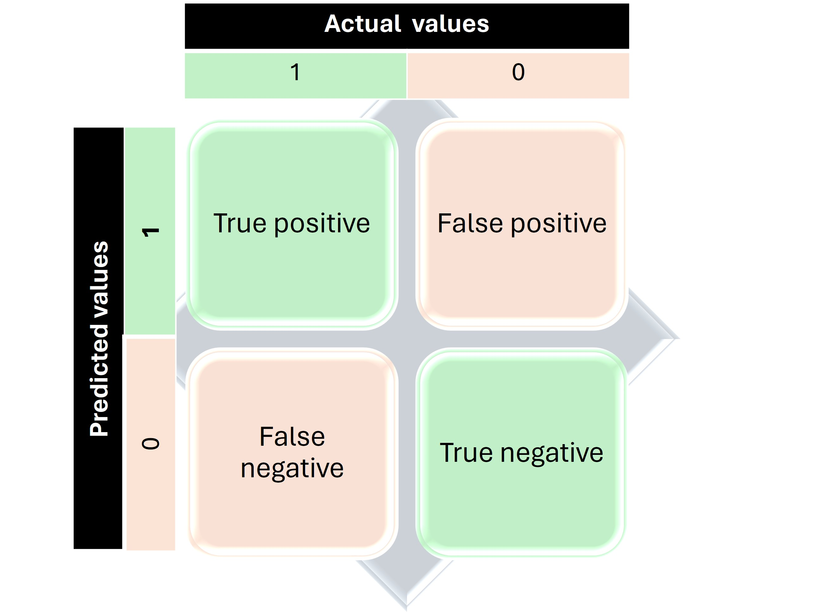
As the name suggests, binary classification results in a dichotomous outcome, such as 'yes' or 'no', 'present' or 'absent'. If the actual and predicted values coincide, the result is categorized as either a True Positive or a True Negative, depending on the presence or absence of the variable. Conversely, if the actual and predicted values do not match, the outcome is categorized as either a False Positive or a False Negative.
However, in real-world applications, we frequently encounter multiclass systems that offer a broader range of possible outcomes.
Let’s discuss how to read the confusion matrix accurately in these more complex scenarios.
Interpretation of a Confusion Matrix for a Multi-class Classification
Let me take an example of a confusion matrix generated from a dataset capturing the corrosion properties of 150 metals and alloys. The snapshot of the dataset is displayed below for reference.The output variable,y (corrosion resistance) column has three outcomes: ‘Poor ’, ‘Fair’, and ‘Excellent’. The remaining columns are input variables (Xs).
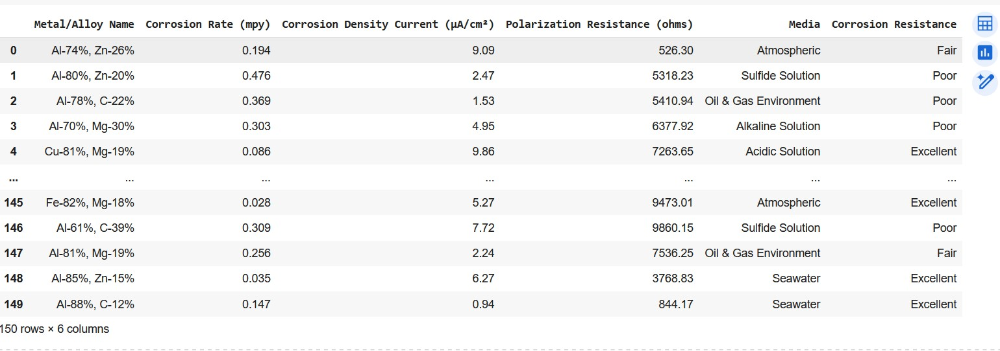
The confusion matrix and the encoded categories are displayed below:
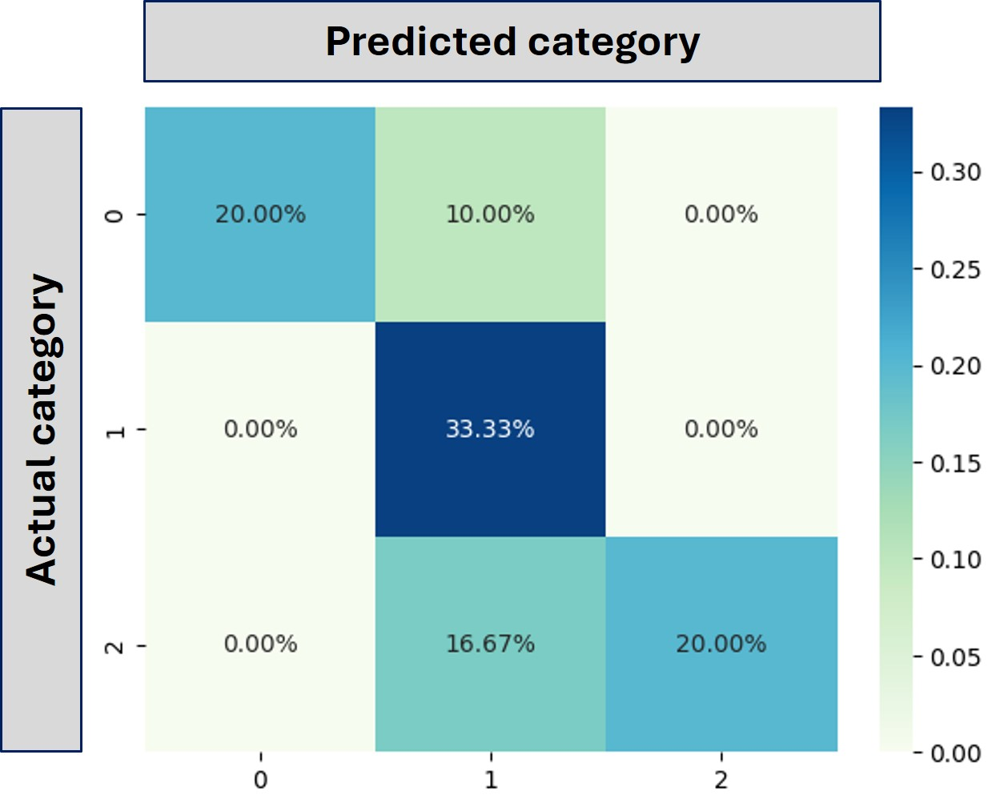
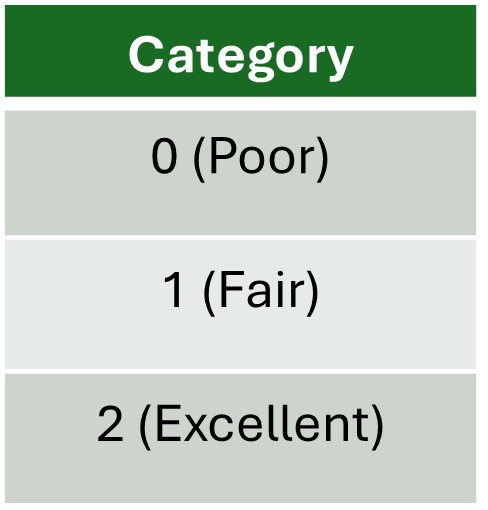
A confusion matrix having three categories.
Let us start reading the above confusion matrix in steps.
- For a multi-class system like above, we need to read the confusion matrix for each category and label the outcomes of the predictions in each cell of the matrix accordingly.
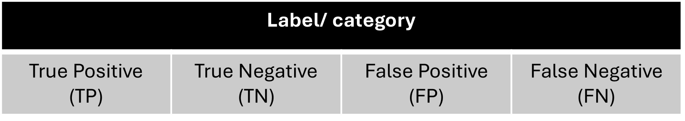
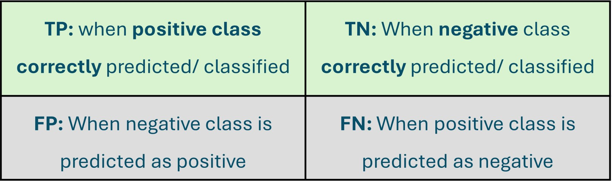
- To analyze the performance of a multi-class classifier using the one-vs-all (OvA) approach, you treat each class independently and consider all other classes collectively as the negative class.
Here’s how you can transform a confusion matrix for each category—Poor, Fair, and Excellent—into a binary format.
CATEGORY: 'Poor'
The confusion matrix for this category is shown below:
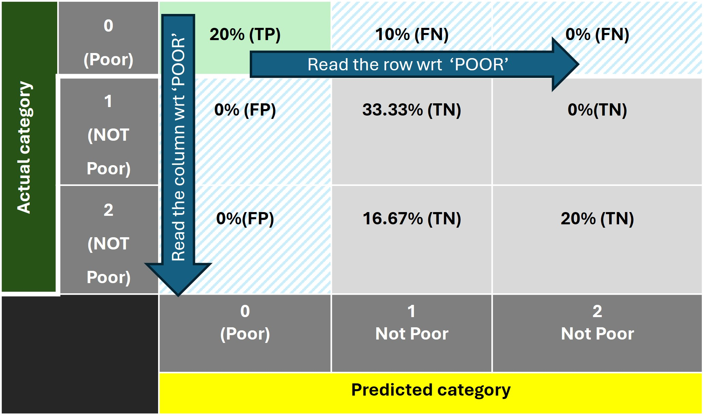
- We need to consider ONLY one class/ category ‘poor’and the remaining classes/ categories as ‘NOT poor’.
- Start reading the matrix first row-wise, and then column-wise as shown below:
Row-wise Reading:
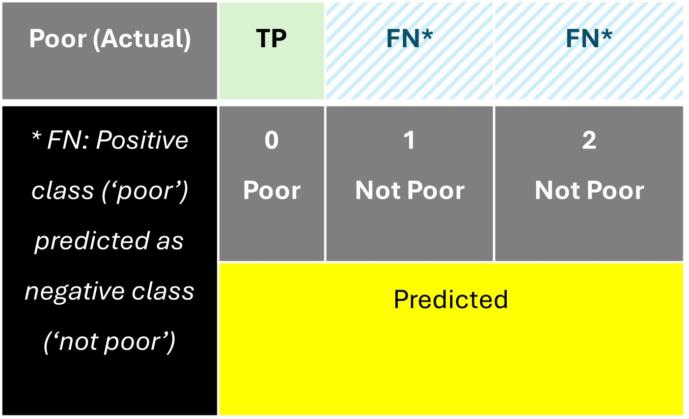
- Cell (1, 1): Actual class and predicted class: ‘POOR’ which means True Positive.
- Cell (1, 2): Actual class categorized as ‘ Poor’; while the predicted class is ‘NOT poor’. Therfore it is False Negative.
- Cell (1, 3): Actual class categorized as ‘ Poor’; while the predicted class is ‘NOT poor’. Therfore it is also False Negative.
Coulmn-wise Reading
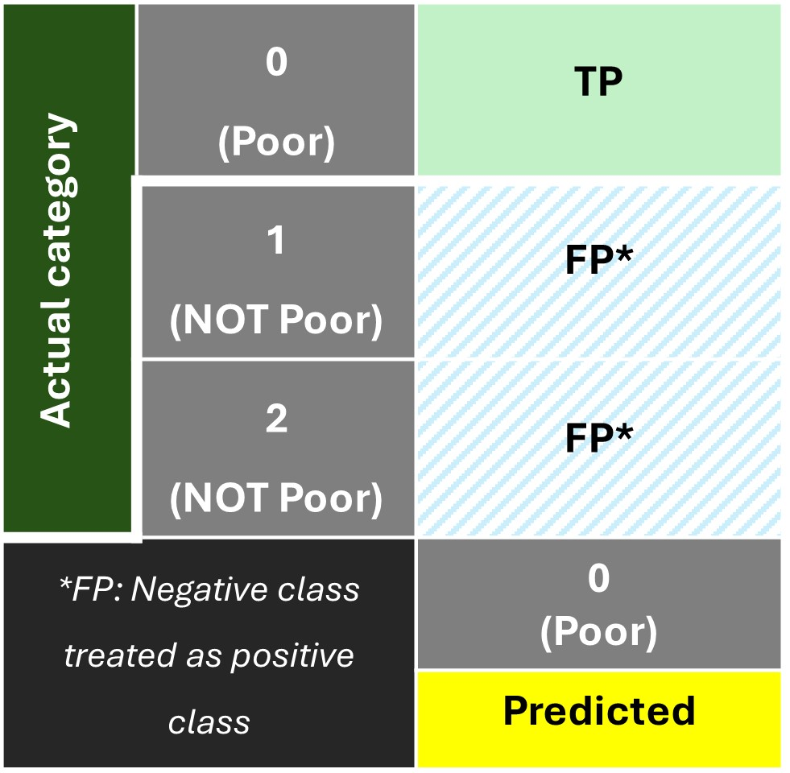
- Cell (1,1): Actual class and predicted class: ‘POOR’ which means True Positive.
- Cell (2, 1): Actual class categorized as ‘ NOT Poor’; while the predicted class is ‘ Poor’. Therfore it is False Positive.
- Cell (3, 1): Actual class categorized as ‘ NOT Poor’; while the predicted class is ‘NOT Poor’. Therfore False Positive.
The remaining cells in the matrix are designated as 'True Negative' since both the actual and predicted class belong to the negative class 'NOT Poor'.
In a similar way, we can interpret the confusion matrices (shown below) for the categories 'Fair' and 'Excellent'.
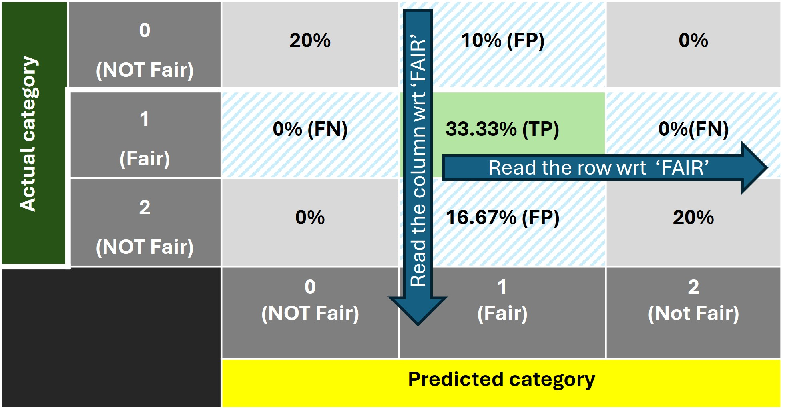Confusion matrix for the category: 'FAIR'
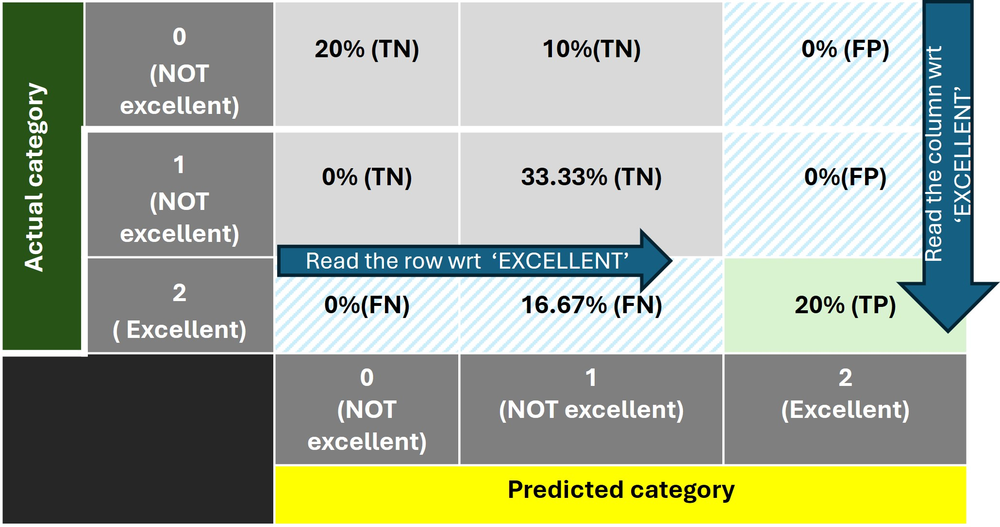Confusion matrix for the category: 'EXCELLENT'
Now that we are clear with the interpretation of a multi-class confusion matrix, let's dive into calculating the 'accuracy' score, which tells us how well our model is performing.
Accuracy and Confusion Matrix
- For a binary classification: Accuracy is calculated in terms of number of correct classifications for both positives and negatives.
$$ Accuracy = {True\ positives\ (TP)+True\ Negatives\ (TN)\over All\ predictions(TP+TN+FP+FN)}$$
- For a multiclass classification, accuracy is the the fraction of all correct predictions/ classifications (basically all true positives).
$$ Accuracy = {Correct\ predictions \over All\ predictions}$$